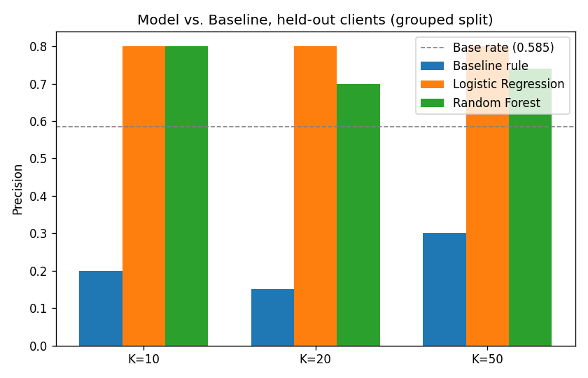
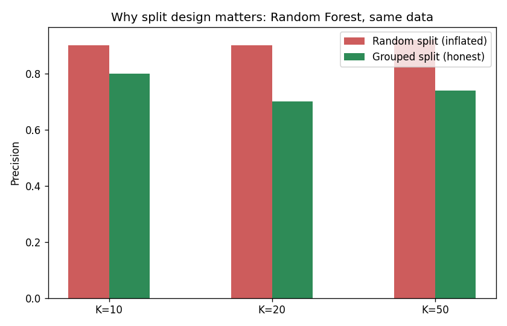
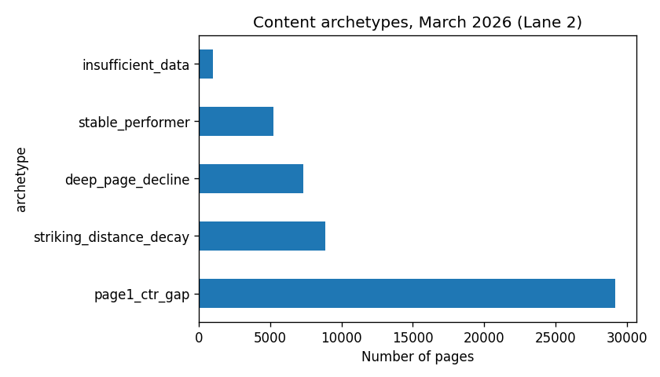

A data-driven priority score for SEO content review, built and validated on real production search data.
A content editor with capacity to review 20–50 pages this cycle needs a ranked list, not a spreadsheet of every page's metrics. Reviewing the wrong pages wastes scarce editor time; missing a genuinely declining page lets it keep losing visibility unnoticed. This project asks: can a learned model rank pages for review better than a simple, hand-written rule — and does that advantage hold up on clients the model has never seen?
Data comes from the FlyRank internship-warehouse on Hugging Face, specifically the fact_content_daily_performance table filtered to month=2026-03 — a mid-panel month chosen deliberately over the sealed final-month sample. The full warehouse spans January 2025 through June 2026 (roughly 79 million rows across 18 monthly partitions); this study develops and validates on one representative month before drawing conclusions.
After filtering to rows where gsc_data_available is true (36.7% of the raw ~9.84M rows that month) and requiring at least one click in the first half of the month, 51,586 content items across 41 clients remained, with a base decline rate of 55.6%.
Excluded, and why: GA4-sourced metrics (sessions, engagement, scroll depth) were excluded entirely — only 4.2% of rows have ga4_data_available = true, too sparse to build a reliable feature from. Rows failing the GSC availability flag are zero-filled placeholders, not real zero-activity measurements, and were dropped rather than treated as real zeros.
Label. A content item is labeled declining = 1 if its clicks in the second half of March (days 16–31) are lower than in the first half (days 1–15); otherwise 0. This is a within-month proxy, not a validated long-run outcome — see Limitations.
Features (all measured in the first half of the month only, before the outcome window): impressions, average search position, number of active days, and position volatility (standard deviation). A CTR-based feature was tested and removed after it produced a suspiciously perfect precision score, traced to pages with exactly one impression and one click — a mechanical 100% CTR from a single lucky click, not a real pattern.
Baseline. A hand-written rule: (a page's position-tier average CTR minus its own CTR) multiplied by its impressions — flagging pages underperforming their position-tier peers, weighted by how much traffic that gap affects.
Validation design. Clients, not rows, were split 80/20 (32 training clients, 9 test clients), so no client's pages appear in both sets. A random row-level split was also tested for comparison and showed inflated precision (0.900/0.900/0.920 vs. the grouped split's honest 0.800/0.700/0.740) — evidence for why the grouped design is the right choice, not an arbitrary one.
Leakage checks performed: confirmed no feature uses data from the outcome window; confirmed no product/composite health-score flags are used as model inputs; confirmed the CTR-feature trap above via a raw-feature-alone diagnostic before removing it; confirmed results are reproducible by fixing a row-ordering issue that was causing small run-to-run drift in the Random Forest model.
| K | Baseline rule | Logistic Regression | Random Forest | Base rate |
|---|---|---|---|---|
| 10 | 0.200 | 0.800 | 0.800 | 0.585 |
| 20 | 0.150 | 0.800 | 0.700 | 0.585 |
| 50 | 0.300 | 0.800 | 0.740 | 0.585 |
All three evaluated on the identical held-out set of 9 unseen clients (7,003 rows). Both learned models outperform the baseline rule; Logistic Regression is the most consistent, holding flat at 0.800 across every cutoff.

Both models beat the hand-written baseline on clients neither model was trained on.

The same Random Forest model, same data — a random split reports precision up to 0.920; the honest client-grouped split reports 0.700–0.800. Split design changes the answer more than the algorithm does.
This is an observational, single-month, single-portfolio study. It shows association, not causation — nothing here demonstrates that performing a suggested fix will cause a page's traffic to recover. The decline label is a within-month proxy (first half vs. second half), not a validated multi-month outcome. GA4-based signals were excluded due to sparse coverage. The held-out test set is only 9 clients, and the Random Forest model's precision showed measurable run-to-run variance even with a fixed random seed until a data-ordering bug was found and fixed — a reminder that "reproducible" needs to be checked, not assumed. Nothing in this study makes any claim about how a search engine's ranking algorithm works.
Content items are grouped into five archetypes based on position tier, decline probability, and data sufficiency:
| Archetype | Count | Action | Reason code |
|---|---|---|---|
| page1_ctr_gap | 29,204 | review_title_meta | low_ctr_vs_tier_peers |
| striking_distance_decay | 8,883 | refresh_content | high_decline_probability |
| deep_page_decline | 7,320 | monitor | low_impact_low_volume |
| stable_performer | 5,204 | protect | stable_trend |
| insufficient_data | 975 | monitor (excluded) | low_sample_flag |

Most pages fall into the page1_ctr_gap archetype — the lowest-cost, highest-potential-payoff review category.
Human review is required before acting on any recommendation — checking for recent URL/tracking changes, page cannibalization, and duplicate prior review. This should never be automated: publishing AI-generated title/meta text without human review, auto-deleting any flagged page, or treating "insufficient_data" pages as either safe or urgent.
Full code, notebooks, and data pipeline: github.com/ArinzeIhematulam/flyrank-ml-internship. Key notebooks: work/notebooks/capstone.ipynb (this paper's source), w04_baseline_score.ipynb (baseline rule), w05_model.ipynb (model training), w06_validation_audit.ipynb (random vs. grouped split audit), w07_action_playbook.ipynb (recommendation queue). All models use random_state=42.
Built on the FlyRank ML Internship dataset. Data and program provided by FlyRank.